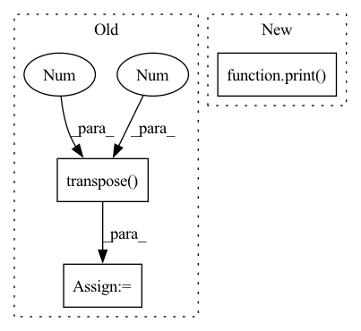

Pattern ID :13598

Before Change
pred_mask_vis = colorize_semseg(postprocess_mask(pred_mask), num_classes=SYNPICK_CLASSES).transpose(0, 3, 1, 2) // [T, 3, h, w]
frames_colorized = colorize_semseg(postprocess_mask(frames_seg.squeeze()), num_classes=SYNPICK_CLASSES)
frames_colorized_vis = frames_colorized.transpose(0, 3, 1, 2) // [T, 3, h, w]
input_colorized = preprocess_img(frames_colorized[:VIDEO_IN_LENGTH]).to(DEVICE).unsqueeze(dim=0) // [b, t, 3, h, w]
colorized_then_pred = pred_colorized_mask_model.pred_n(input_colorized, pred_length=VIDEO_PRED_LENGTH)
After Change
print(f"MSE loss seg->colorize (per frame): {mse(seg_color_per_frame_vis, gt_colorized_vis)}")
print(f"MSE loss pred->seg->colorize: {mse(pred_seg_color_vis, gt_colorized_vis)}")
print(f"MSE loss seg->pred->colorize: {mse(seg_pred_color_vis, gt_colorized_vis)}")
print(f"MSE loss seg->colorize->pred: {mse(seg_color_pred_vis, gt_colorized_vis)}")
print("")
save_vid_vis(
out_fp=os.path.join(cfg.out_dir, "4way_vis_{}.gif".format(str(i))),
In pattern: SUPERPATTERN
Frequency: 3
Non-data size: 3
Instances
Fragment ID: 45703225
Project Name: ais-bonn/vp-suite
Commit Name: 12f06dedbeb7683194c69214a6c984951ddd53a5
Time: 2021-08-02
Author: boltres@ais.uni-bonn.de
File Name: scripts/visualize_4_way.py
M Class Name: AnonimousClass
N Class Name: AnonimousClass
M Method Name: visualize_4_way(1)
N Method Name: visualize_4_way(1)
M Parent Class:
N Parent Class:
M File Name: scripts/visualize_4_way.py
N File Name: scripts/visualize_4_way.py
M Start Line: 28
M End Line: 62
N Start Line: 33
N End Line: 76
'>
Before Change
cumulative_loss.append(0)
for data in dataloader:
data = Variable(data.transpose(0,1)).float()
out = self.wf(data)
t0 = time.time()
After Change
cumulative_loss.append(0)
for data in dataloader:
print("\n data ", data.shape)
data = Variable(data).float()
t0 = time.time()
out = self.wf(data)
'>
Fragment ID: 45703249
Project Name: nlesc-jcer/qmctorch
Commit Name: 3dd6974f914a3d22ee620c2359808489d7f573a0
Time: 2019-05-13
Author: nicolas.gm.renaud@gmail.com
File Name: pyCHAMP/solver/neural_net.py
M Class Name: NN4PYSCF
N Class Name: NN4PYSCF
M Method Name: train(2)
N Method Name: train(2)
M Parent Class: SOLVER_BASE
N Parent Class: SOLVER_BASE
M File Name: pyCHAMP/solver/neural_net.py
N File Name: pyCHAMP/solver/neural_net.py
M Start Line: 111
M End Line: 138
N Start Line: 117
N End Line: 136
'>
Before Change
aggregated_features = []
for length in lengths:
output_node_features = nodes_output[:, :length, :]
weights = self.Wq(output_node_features).transpose(1, 2)
aggregated_feature = weights.matmul(output_node_features).squeeze(dim=1)
aggregated_features.append(aggregated_feature)
aggregated_features = torch.cat(aggregated_features, dim=0)
return aggregated_features
After Change
weights = self.Wq(output_node_features)
aggregated_features.append(weights)
aggregated_features = torch.cat(aggregated_features, dim=0)
print(aggregated_features.shape)
return aggregated_features
class WeightedGCNBlock(nn.Module):
def __init__(self, in_features: int, hidden_sizes: List[int], out_features: int):
'>
Fragment ID: 45703235
Project Name: benedekrozemberczki/pytorch_geometric_temporal
Commit Name: 6c36f8a6c545046914ce31c842b9648ac37c8b93
Time: 2021-07-24
Author: benedek.rozemberczki@gmail.com
File Name: torch_geometric_temporal/nn/attention/dnntsp.py
M Class Name: AggregateTemporalNodeFeatures
N Class Name: AggregateTemporalNodeFeatures
M Method Name: forward(2)
N Method Name: forward(3)
M Parent Class: nn.Module
N Parent Class: nn.Module
M File Name: torch_geometric_temporal/nn/attention/dnntsp.py
N File Name: torch_geometric_temporal/nn/attention/dnntsp.py
M Start Line: 100
M End Line: 111
N Start Line: 121
N End Line: 126